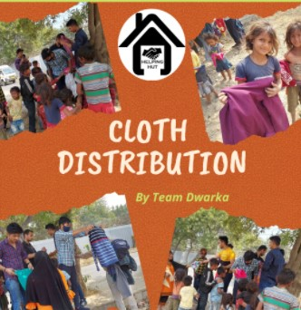
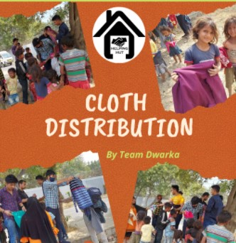

Starvation hit the impoverished due to pandemic. At this time helping hut organized food distribution drives to help the impoverished. Drives were organized in cities - Patna, New Delhi and Kota. Food packets were distributed in D block, Gali No. 5, Bharat , Vihar Kakrola by team New Delhi in collaboration with NSS, DDUC on 10th April,2021. Team Kota also reached the poverty stricken people in Village khariya, Rajasthan on 26 May,2021 and distributed raw food materials. 500+ food packets were distributed by Team Patna,New Delhi and Kota. Proper Covid Protocols were followed by our volunteers , every volunteer was masked ,carried their own Sanitizer, followed social distancing norms in each distribution drive.
GLIMSE


 
